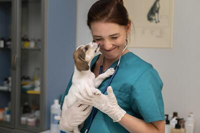
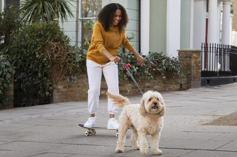

| Dra. Miranda Díaz | Dra. Mónica Gerbera | |||
|---|---|---|---|---|
|  | Siempre quiso ser veterinaria y así lo hizo, a pesar de que su familia siempre había estudiado derecho, decidió romper la tradición y dedicarse a lo que de verdad le gustaba, ayudar y curar animales. | Ha hecho tanto la carrera de veterinaria como varios cursos de programación de
distintos lenguajes de programación. Mónica aka 'la socia' trabaja día y noche en el proyecto Helping Paw. |
 |